|
|
| nudibranchs text index | photo index |
| Phylum Mollusca > Class Gastropoda > sea slugs > Order Nudibranchia |
| Polka-dot
nudibranch Jorunna funebris Family Discodorididae updated May 2020 Where seen? This distinctive elegantly-spotted nudibranch is regularly encountered on many our shores. Sometimes lots are seen. On coral rubble near reefs. Features: 1- 6cm long. Fleshy oval body, white with black circular markings. These markings are actually made up of tiny raised black bristles on the skin (called caryophyllidia). In fact, the entire body is covered with bristles, which are mostly white, giving the animal a fuzzy appearance. It has black-tipped rhinophores and black edging on feathery gills on the back. What does it eat? It is said to eat a blue sponge (Neopetrosia sp.). Indeed, on Pulau Sekudu, we have seen large Polka-dot jorunna nudibranchs near these sponges, sometimes in pairs, and sometimes appearing to have just having laid a ribbon-like egg mass. Elsewhere, we have also seen these nudibranchs near blue sponges. |
|
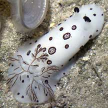 Sentosa, Mar 05 |
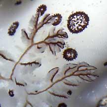 Black edged gills |
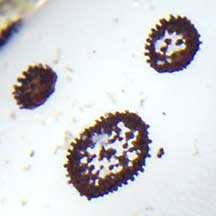 The spots are actually arrangements of tiny black bristles. |
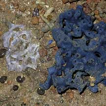 |
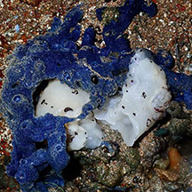 Ate up a lot of the blue jorunna sponge Pulau Sekudu, Aug 23 Photo shared by Chay Hoon on facebook. |
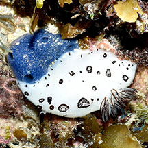 Chomping on blue jorunna sponge Pulau Jong, May 24 Photo shared by Loh Kok Sheng on facebook. |
 With egg mass Pulau Sekudu, Jul 05 |
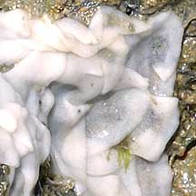 |
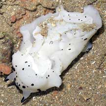 Underside |
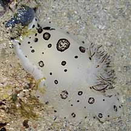 Chomping on a blue sponge? Pulau Semakau, Jan 09 |
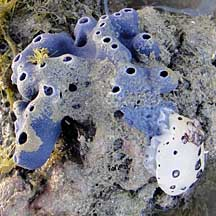 Chomping on a blue sponge? South Cyrene, Feb 11 |
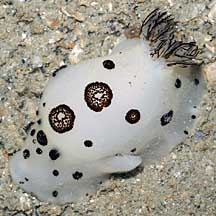 Ate something large? Pulau Semakau, Mar 08 |
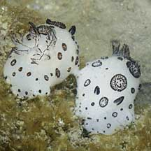 Mating Pulau Semakau, Feb 08 |
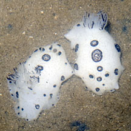 Mating Tanah Merah, Aug 11 |
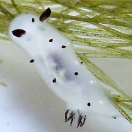 Tiny, about 1cm. Several seen. Sentosa, Jan 06 |
| Polka-dot nudibranchs on Singapore shores |
On wildsingapore
flickr
|
| Other sightings on Singapore shores |
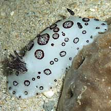 Pulau Senang, Jun 10 Photo shared by Loh Kok Sheng on his flickr. |
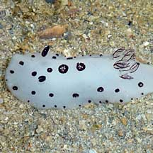 Pulau Berkas, May 10 Photo shared by Loh Kok Sheng on his flickr. |
| Polka dotted nudibranch from Loh Kok Sheng on Vimeo. |
| Polka-dot nudibranch at Sentosa from Loh Kok Sheng on Vimeo. |
Links
|